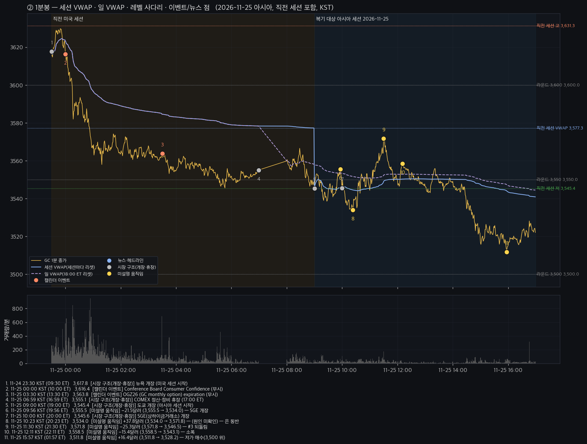
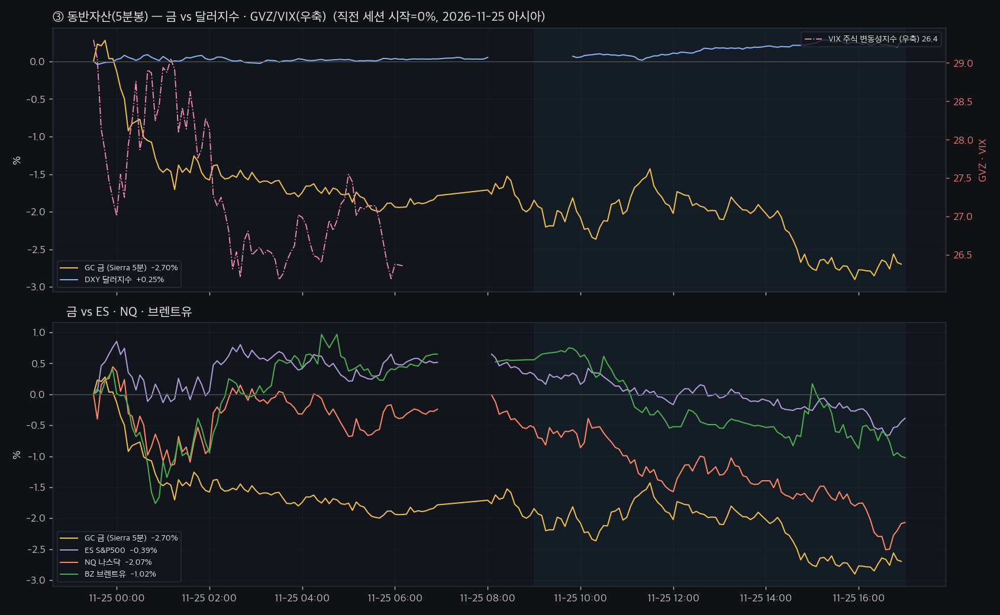
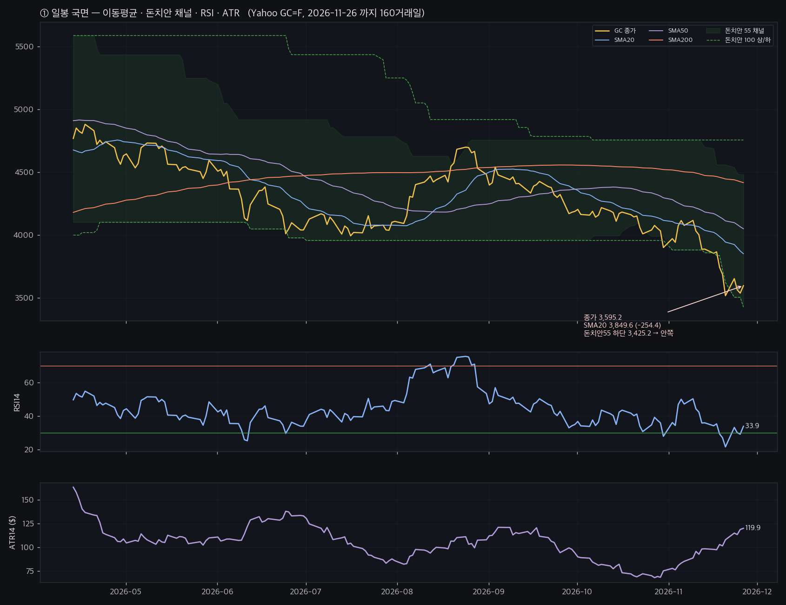

2026-11-25 아시아 세션 복기 (19:00~03:00 ET / 09:00~17:00 KST)
작성 11-26 KST(소급) · 틱 GC_2026-11-25.asia.ok window_utc 11-25 00:00~08:00 · bars_in_window 471 · empty_minutes 9 · longest_gap_min 6 · written_kst 11-25 17:05:12 · 종목 GCZ26. 이 세션의 예측 노트는 없음 — 11-25 07:45 아시아 예측 cron 이 Claude 로그인 없음으로 실패. 점수 na, 실측·타임라인·원인만 기록. 꼬리 보충 ⓪ 은 같은 날 앞 세션 노트가 없어 건너뜀.
■ 그림 — 세션 지도

점 번호 → 그림 아래 목록.
■ 점수 na (예측 없음) — 실측만
| 항목 | 예측 | 실측 (틱 477봉, 00:00~07:59 UTC) | 판정 |
|---|
| 고저폭 | (없음) | 62.6달러 = 1.76% (고 3,573.9 @11:31 KST → 저 3,511.3 @15:57 KST) | na |
| 가격대 | (없음) | 시가 3,547.9 기준 위 +26.0 / 아래 −36.6달러 | na |
| 방향 | (없음) | 하락 — 종가 3,522.1, 종가−시가 −25.8달러 (−0.73%) | na |
| 이벤트 | (없음) | 등급표 이벤트 없음 · SGE(Shanghai Gold Exchange, 상하이금거래소) 개장 20:00 ET(10:00 KST) 1분 고저 8.2달러(세션 최대 1분 고저), 15분 −8.2 | na |
| 킬스위치 | (없음) | 5분 고저 ≥14.7(3배) / 거래량 ≥465(5배) — 발동 0회 (5분 최대 11.5달러) | — |
실측 출처 · 구간 · 거래량 비교
session_actuals.py GC_2026-11-25.csv asia --events 20:00 --buckets 0-60,60-120,120-240,240-360,360-10000.
- 구간(고저 · 종−시, 달러): 09:00~ 18.1 · −0.4 / 10:00~ 21.5 · −0.8 / 11:00~13:00 29.7 · +0.1 / 13:00~15:00 35.4 · −25.5 / 15:00~17:00 20.3 · −0.3. 1분 고저 중앙 1.8 / p90 3.9, 5분 중앙 4.9달러·93계약.
- 거래량: GCZ26 11,132계약(분당 23) — 11-24 아시아 43,223(분당 90)의 0.26배. 원인은 유동성 감소보다 롤(roll, 근월물→다음 월물 이월): GCZ26 은 11-27 first position day(인도 의사 통지 첫날) 앞이라 포지션이 GCG27 로 옮겨 가는 중 — 11-25 하루 거래량 GCG27 181,234 > GCZ26 57,903(datacollect). 같은 날 GCX26(COMEX Gold November 2026 futures, 11월물) 최종거래일 · 추수감사절 전일이 겹쳐 전체 유동성도 얇다. 거래량 배수는 GCZ26 단독이라 과소평가.
■ 핵심 메시지
1. 하락 −25.8달러의 거의 전부(−25.5)가 13:00~15:00 KST 한 구간 — 아시아 반도체 주식 폭락 + 관세 위협 속 은 동반 청산
- Kospi −5.6%·Taiex −6% 넘게·TSMC(Taiwan Semiconductor Manufacturing Co., 대만 반도체 위탁생산) 약 −8%(Admiral Markets) · USTR(Office of the United States Trade Representative, 미 무역대표부) 16개국 과잉생산 조사 결과 발표 임박 보도(Reuters). 다리 #8(13:21~15:01 KST) −40.1: 은 −1.78%·ES(E-mini S&P 500 futures, S&P500 미니 선물) −0.33%, DXY(US Dollar Index, 달러 인덱스) +0.06% 뿐.
- Reuters 07:08 GMT 현물 −1% 3,519.94·12월물 −1.2% 3,519.00(달러 강세)(Reuters) — 세션 DXY +0.199% 로 달러 몫 ≈ −10달러(44%), 나머지는 주식·은 동행.
2. 11:31 KST 고점 3,573.9 는 +37.8달러 단숨 상승(#3) 끝의 1분 +7.6(세션 최대 1분 종가 변화, 176계약) — 곧 −25.3 반락, 촉발 (원인 미확인)
- 은 +1.84%·DXY −0.04%·ES −0.23% — 달러·주식 설명 불가, 금속 단독 수급. 롤 기간 얇은 호가(분당 23계약)가 1분 크기를 키움.
3. SGE 개장 20:00 ET 가 또 세션 최대 1분 고저(8.2달러) — 5건째, 이번엔 15분 −8.2(하락)
- 11-02·11-03·11-23(상승)·11-24·11-25(하락) — 부호 섞임·크기 일관.
■ 움직임 타임라인 (틱, 전환 임계 9.8달러)
움직임 타임라인 — 8건(다리 포함), 미설명 2건(#3·#8b)
| # | 시작 KST (ET) | 지속 (분) | 움직임 (달러) | 가격 → 가격 | 거래량 배수 | 촉발 추정 1분 | 상태 |
|---|
| 2 | 09:56 (19:56) | 27 | −21.5 | 3,555.5 → 3,534.0 | 1.8배 | 20:00 ET (111) | SGE 개장 |
| 3 | 10:23 (20:23) | 67 | +37.8 | 3,534.0 → 3,571.8 | 2.0배 | 21:30 ET (176) | (원인 미확인) — 은 동반 |
| 4 | 11:30 (21:30) | 34 | −25.3 | 3,571.8 → 3,546.5 | 1.5배 | 21:30 ET (176) | #3 되돌림 |
| 6 | 12:11 (22:11) | 60 | −15.4 | 3,558.5 → 3,543.1 | 0.6배 | 22:57 ET (28) | 소폭 |
| 8b | 13:53 (23:53) | 68 | −35.1 | 3,550.9 → 3,515.8 | 1.1배 | 00:49 ET (93) | 아시아 주식 폭락·관세 위협, 추세형 |
| 11 | 15:57 (01:57) | 49 | +16.4 | 3,511.8 → 3,528.2 | 1.5배 | 02:46 ET (318) | 저가 매수(3,500 위) |
■ 원인 추적 — R1 1건(21:30 ET, 캘린더 밖)
원인 추적
| 행 | 촉발 ET | 확인한 것 | 동반 자산 같은 구간 (DXY % · 10년 bp · 은 % · ES % · BZ %) | 분류 |
|---|
| 3·4 | 20:23~21:30 / 21:30~22:04 | 분 헤드라인 (원인 미확인) — 검색 gold price Asia trade November 25 2026 Reuters; Reuters 아시아 기사엔 시각 근거 없음 | −0.04 · −0.7 · +1.84 · −0.23 · −0.53 / +0.07 · −0.9 · −1.82 · −0.25 · −0.25 | 은 주도 금속 수급(G), 롤 기간 얇은 호가 |
| 8b | 23:53~01:01 | Kospi −5.6%·Taiex −6%·TSMC −8%(Admiral Markets) · USTR 발표 임박(Reuters) · 달러 강세 서술(Reuters) | +0.06 · −0.7 · −1.78 · −0.33 · +0.46 | 청산형(F) — 위험자산 급락 → 현금화, 금리는 금 쪽 |
■ 동반 자산 · 경로 분해
세션 −23.3달러(00:00~07:59 UTC) — 달러 몫 ≈ −10달러(44%), 은·주식 동행이 나머지
- 세션 변화: DXY +0.199% · ZN(10년 국채 선물) +0.35%(≈ −5bp, 금 쪽) · 은 −1.46% · ES −0.74% · 브렌트 −1.55% · USDJPY 0.0%.
- 1분 동행 상관: 은 +0.66 · ES +0.39 · DXY −0.14 · EURUSD +0.14 · ZN −0.13. 선행 lag ±1~10 전부 |0.11| 이하. 5분 은 +0.83.
- β: 7일 기준선 금~DXY β −1.44 → 달러 몫 −0.29%. 금리는 내렸는데 금도 내림 — 금리 경로 아님. 출처
gold_session_driver_decomp.py 캐시 데이터/companion_1m/2026-11-25. VIX·GVZ 정규장 전 결측.

5분봉, 직전 세션 시작=0%. 위: 금 vs 달러지수, 아래: 금 vs ES·NQ·브렌트유.
■ 교훈 → 학습원장
예측이 없어 적중/빗나감 판정 불가 — 원장 행 추가 없음
- 관찰: 롤 주간(first position day 직전 2~3일) 근월물 단독 거래량 배수는 유동성 지표로 못 씀 — 킬스위치 거래량 기준도 둔감.
■ 일봉 국면 (그림)

■ 빗나간 이유 (원인 A~H)
| 빗나간 것 | 원인 | 한 줄 |
|---|
| (예측 없음) | — | 11-25 07:45 cron 로그인 실패(운영 사고, A~H 밖) |
복기 검색 (01_뉴스 채널 §4-4) — 켜진 트리거 R1, 2쿼리 / 0페이지
| 트리거 | 판정 | 알게 된 것 / 적은 곳 |
|---|
| R1 | 발화 — 1분 종가 변화 7.6 ≥ 1분 고저 p90 3.9, 21:30 ET, 예정 이벤트 없음 | 촉발 미확인 · 배경 아시아 주식·관세 → 위 #8b |
| R5 | 판정 불가 — 예측 없음 | — |
| R6 | 발화 — USTR Section 301 과잉생산 조사(11-25 13:15 UTC 발표, 20~40% 상한)(Reuters) — 발표는 유럽 세션 | 01 §5 후보 '관세 발표 임박 보도' |
search_used R1:발화/부분;R6:발화/1. 데이터 축적: SGE_day_open_dates.csv 11-24 20:00 추가. occurrence_append 새 행 0(deferred 5건, 이전과 같음).
■ 개선 제안 (규칙표 수정 후보 — 월간 갱신 때 판단)
- 롤 주간 거래량 기준: first position day 직전 세션은 킬스위치·거래량 배수를 근월+다음 월물 합으로 보거나 '롤 주간' 표시 — GCZ26 아시아 분당 23(전날 90).
- SGE 개장(20:00 ET) 주의 시각 고정 — 5건째(11-24 아시아 §5 #1 재제안).
■ 미확인
못 확인한 것 3건 — 21:30 ET 고점 촉발 헤드라인 · GCG27 아시아 세션 거래량 · VIX·GVZ 아시아 시간대
출처·파일